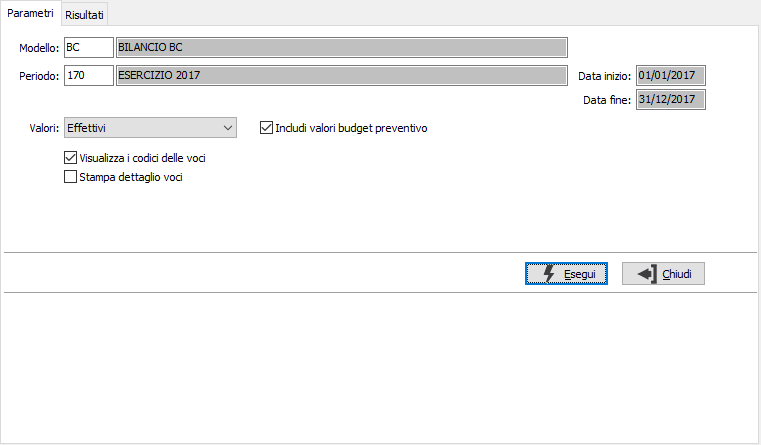
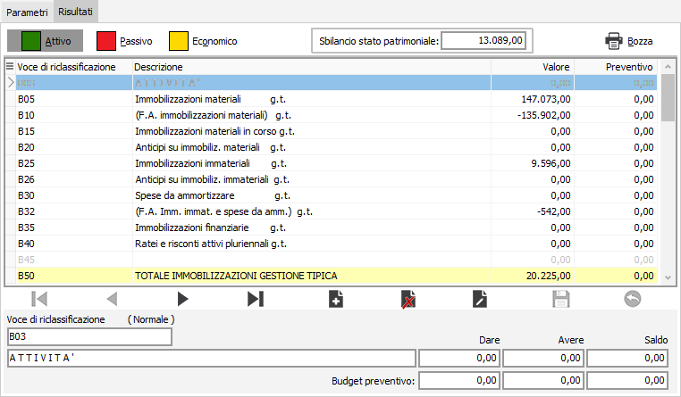
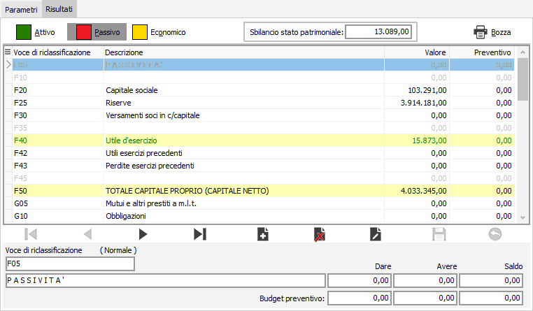
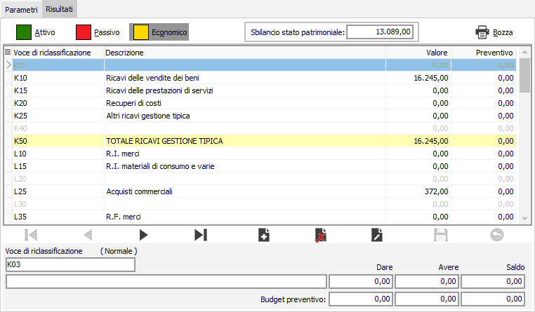

Manutenzione valori voci di bilancio
La procedura consente di manutenere la base dati principale del modulo analisi di bilancio, su cui saranno effettuate la stampa dei bilanci e le varie analisi; cioè le voci di riclassificazione valorizzate consentendo la modifica degli importi e visualizzandone gli effetti in tempo reale.
La pagina dei parametri consente di specificare i criteri relativi alla selezione delle voci da manutenere.

MODELLO: inserire il modello di riclassificazione da utilizzare per la selezione; il modello indica alla procedura le voci da utilizzare. Sul campo sono attive le funzioni di ricerca (F9) sulla tabella stessa.
PERIODO: inserire il periodo per cui si desidera effettuare la manutenzione delle voci; il periodo indica alla procedura i valori da utilizzare. L'inserimento del periodo determina la valorizzazione delle date di elaborazione. Sul campo sono attive le funzioni di ricerca (F9) sulla tabella stessa.
VALORI: indicare quali valori si desidera visualizzare ed eventualmente modificare: i valori effettivi oppure quelli rettificati.
INCLUDI VALORI BUDGET PREVENTIVO: spuntare la casella se desidera visualizzare ed eventualmente modificare anche i valori relativi ad un eventuale budget preventivo inserito per il periodo richiesto.
VISUALIZZA I CODICI DELLE VOCI: spuntare la casella se si desidera visualizzare anche il codice della voce di riclassificazione, altrimenti sarà visualizzata soltanto la descrizione.
STAMPA DETTAGLIO VOCI: se la casella è spuntata indica di stampare il dettaglio dei conti che compongono la singola voce di riclassificazione con relativi importi.
La pressione del pulsante Esegui visualizza nella pagina Risultati l'esito della selezione suddividendo le voci in Attivo, Passivo ed Economico; l'accesso alle tre classificazioni avviene tramite i relativi pulsanti posti sopra la griglia dei dati.
Da questa sezione è possibile modificare solo gli importi DARE ed AVERE delle voci presenti; la modifica ad un qualsiasi importo dà origine ad un ricalcolo generale delle voci in ognuna delle classificazioni ed il risultato è immediatamente visibile.
Tramite il pulsante Bozza è possibile effettuare la stampa del bilancio, in formato bozza di prova, per controllare immediatamente l'entità delle modifiche apportate.
La pressione del tasto Salva sulla toolbar principale (F10) effettuerà il salvataggio dei dati modificati, dopo richiesta di conferma; analogamente la pressione del tasto Annulla sulla toolbar principale (ESC) annullerà ogni modifica apportata, sempre dopo una richiesta di conferma.
Di seguito sono visualizzati degli esempi della pagina Risultati e delle tre categorie in cui vengono suddivise le voci di riclassificazione.


